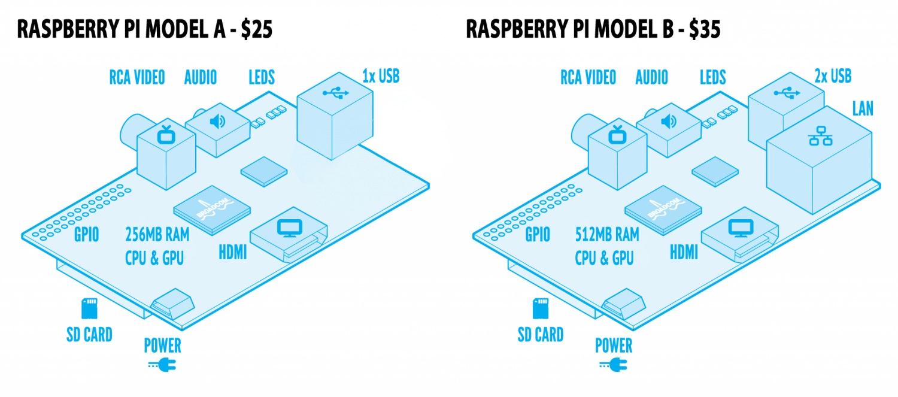

How to Build Your Cluster
So you are ready to take the plunge and build your own cluster. Although there are a lot of good tutorials out there the one that
we used to build ours is from the Univsersity of South Hampton. Although, there tutorial was great there were still a couple of things that we needed to change for the system to work.
Their tutorial can be found here.
Below we have adpated their tutorial for what worked for us.
OBTAIN THE MATERIALS
Before we start anything you first need to get the requried materials listed below
TOTAL COST = 510.34
Mind you most of these objects people own like a keyboard, mouse, and monitor. Owning those three items alone will drop you to a more reasonable price around $300
BUILDING THE CLUSTER
Okay so you've made the commitment of buying all the materials. Now comes the time to actually building your cluster.
- Download the Disk Image of the PI
There are a lot of ways of doing this. The
way that we suggest that work best is to download the NOOBS (new out of the box) toolkit from the raspberry pi website found here
- Once you download that it is highly suggest from both us and the Raspberry PI website that you use an SD card formatter. The one we used, and the one that Raspberry PI suggests found here
- After you put the Noobs toolkit on it your card is formatted go ahead and drag and drop the NOOBS file onto your SD card. The southhampton tutorial suggests you use win32 if you are using a PC or Disk Utility when using a mac. We found that dragging and dropping the image did work, so give it a try!
- Next put the SD card into the bottom of the pi. Plug in you HDMI cable to your monitor, Plug your USB mouse/keyboard into the USB slots, and finally plug your power into a power strip and turn on the PI shuld boot up

- You will next find that your PI will give you a list of possible operating systems to boot up. The operating system we suggest is the wheesy-raspian operating system(the one with the picture of a funny cat). Also make sure that you install a the correct language at the bottom of the PI. Although installing UK system on a US keyboard seems fun, trust us there is a difference.
After that your are done setting up your pi as a single computer. You may be thinking at this point that you will need to do this for each pi you plan you us on our cluster, but we will show you later down how to clone this drive so that you only have to do this once.
Setting up Parallism
Now comes the fun part setting everything up with MPI
MPI is a library found in c or fortran that enables comunication between diffeerent computers.
- First make sure that your PI is up to date open the
$ sudo apt-get update
incase you don't understand sudo in this command, this will allow to get acces to change anything you need. Sometimes when installing things the command line will spit back premission denied. By typing sudo before the command this will allow you make changes